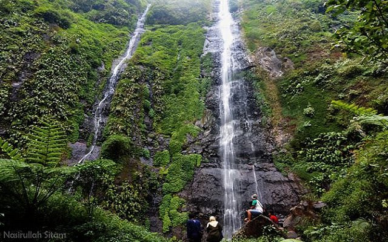
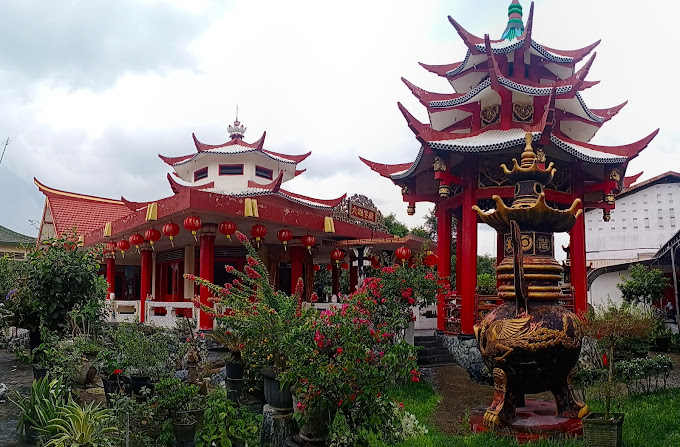

Kedung Cinet

Kedung Cinet adalah wisata alam berupa aliran sungai dengan bebatuan kapur unik yang membentuk panorama mirip Grand Canyon mini. Suasana sejuk dan aliran air jernih membuatnya cocok untuk tempat bersantai dan berfoto.
Air Terjun Tretes

Air Terjun Tretes terletak di lereng Gunung Anjasmoro dengan ketinggian sekitar 158 meter. Udara pegunungan yang sejuk, pemandangan hutan yang asri, serta suara gemericik air memberikan ketenangan bagi pengunjung.
Bale Tani

Bale Tani adalah wisata edukasi berbasis pertanian yang mengajarkan cara bercocok tanam, beternak, hingga mengenal hidroponik. Selain belajar, pengunjung juga bisa berwisata kuliner dan menikmati suasana pedesaan yang alami.
Klenteng Hong San Kiong

Klenteng Hong San Kiong di Gudo merupakan tempat ibadah umat Tri Dharma dengan arsitektur khas Tionghoa yang megah. Selain sebagai tempat religi, klenteng ini juga menjadi destinasi wisata budaya dan sejarah di Jombang.